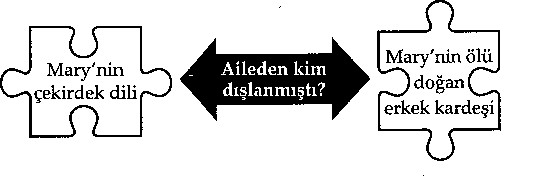
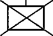
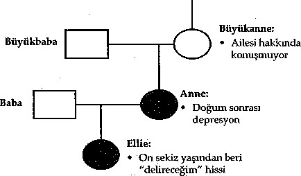

Çekirdek Cümle
"Girmekten korktuğunuz mağara, aradığınız hâzineyi barındırır."
—Joseph Campbell, Reflections on the Art of
Living
Eğer bir korku ya da fobi, panik atak ya da takıntılı düşüncelerle boğuşuyorsanız, içsel yaşamınızın hapishanesinde bir tutsak olmanın nasıl bir duygu olduğunu çok iyi biliyorsunuzdur. Kendi içinizde geçirdiğiniz zorlu zaman (sürekli endişelenmek, baskın duygular, sinir bozucu beden hisleri) duruşma ya da mahkûmiyet olmadan verilmiş bir müebbet hapis cezası gibidir. Korku ve endişeler, sizi bekleyen günü ve yaşamı sınırlandırarak dünyanızı küçültür ve canlılığını yok eder. Bu şekilde yaşamak çok yorucu olabilir.
Bir yol bulmak düşündüğünüzden daha kolaydır. Sadece başka türlü bir müebbet hapisle cezanızı çekmelisiniz; en kötü korkularınızın yarattığı cümleyle... Bu cümle muhtemelen çocukluğunuzdan beri sizleydi. Yüksek sesle söylense de sessizce ifade edilse de, bu cümle umutsuzluğunuzu derinleştirir. Ancak aynı zamanda, bu sizi hapishane kapısından çıkarıp yeni bir anlayış ve çözüm dünyasına götürebilir. Bu cümleye çekirdek cümle denir. Çekirdek cümle haritanız gömülü hâzinenizin yerini bulmak için bir araç ise, çekirdek cümleniz oraya vardığınızda bulduğunuz bir elmastır.
Çekirdek Cümlenizi Bulma
Daha fazla ilerlemeden önce, şu soruyu cevaplayın ve cevabınızı yazın: Başımza gelebilecek en kötü şey, en kötü korkunuz nedir? O muhtemelen ömür boyu sahip olduğunuz bir duygu ya da korkudur. Belki onunla doğmuş gibi hissediyor-sunuzdur. Biraz farklı şekilde soracak olursak, soru şudur: Eğer yaşamınız parçalansa, eğer her şey çok kötü giderse, en kötü korkunuz nedir? Başınıza gelebilecek en kötü şey nedir? Cevabımzı yazm.
Yazılı Alıştırma#6: Ana Cümlenizi Belirleme
Benim en kötü korkum, başıma gelebilecek en kötü
şey...
Şimdi yazdığınız şey sizin çekirdek cümlenizdir. Yazana kadar daha fazla okumayın.
Belki çekirdek cümleniz "Ben" kelimesi ile başlıyordun "Ben her şeyi kaybederdim."
Belki "Onlar" kelimesi ile başlıyordun "Onlar beni yok ederlerdi."
Belki cümleniz "Benim" kelimesi ile başlıyordun "Benim çocuklarım/ ailem/karım/kocam beni terk ederdi." Bir çekirek cümle başka birçok kelime ile de başlayabilir.
Şimdi daha derine gidelim ve aynı soruyu cevaplayalım. Bu sefer düzeltmeyin, ilerleyebildiğiniz kadar ilerleyip yazmaya devam edin. Bu soruya vereceğiniz cevap, ileriki sayfalarda derinleşmeye devam edecek olan bir kendini keşfetme süreci başlaür.
Yazılı Alıştırma#?: Ana Cümlenizi Düzeltme
Başıma gelebilecek en kötü şey...
"Ben..." "Onlar..."
"Ben yapabilirim..."
"Benim çocuklarım/ailem/eşim yapabilir.
Ne yazdığınıza bakın. Eğer en dibine ulaştığınızı düşünüyorsanız, kendinize bir soru daha sorun: Ve eğer bu olsaydı ne olurdu? Bunun en kötü yanı ne olurdu?
Örneğin, eğer "Ölebilirdim." yazdıysanız, bunu biraz daha ilerletin. Ve eğer bu olsaydı, en kötü yanı ne olurdu?
"Ailem bensiz kalırdı."
Biraz daha derinleşin. En kötü yanı ne olurdu?
"Ailem beni unutacak."
"Ailem beni unutacak." cümlesinin diğer iki cümleden daha fazla anlamı olduğunu hissediyor musunuz?
Çekirdek cümlenizin üzerinizdeki duygusal etkisini derinleştirmek için bir dakika ayırın.
Yazılı Alıştırma#8: Çekirdek Cümlenizi Derinleştirme
Benim esas korkum...
Şimdi hangi kelimeleri yazdığınıza tekrar bakalım. Çekirdek cümleniz muhtemelen üç, dört, belki beş ya da altı kelime içeriyordur. Önceden bahsettiğimiz gibi, genelde "Ben" ve "Onlar" sözcükleriyle başlar fakat başka kelimelerle de başlayabilir.
Bu, genelde şimdi oluyormuş gibi ya da olacakmış gibi şimdiki zamanda ya da gelecek zamanda söylenmiş bir cümledir. Bu kelimeleri içinizde canlı gibi hissedersiniz. Yüksek sesle söylendiğinde onlar bedeninizde yankılanır. Ana cümle hedefte olduğunda, tahtadaki bir "küt" sesinden ziyade kristaldeki bir "çınlama" sesi gibidir. Ana cümleleriniz şunlara benzeyebilir:
"Ben tamamen yalnızım." "Onlar beni reddediyor."
"Onlar beni terk ediyor."
"Onları hayal kırıklığına uğrattım." "Her şeyimi kaybedeceğim." "Hayatım kararacak."
"Hepsi benim suçum."
"Onlar beni terk ediyor."
"Onlar bana ihanet ediyor."
"Onlar beni aşağılıyor." "Delireceğim."
"Çocuğuma zarar vereceğim." "Ailemi kaybedeceğim." "Kontrolümü kaybedeceğim." "Çok kötü bir şey yapacağım." "Birine zarar vereceğim." "Yaşamayı hak etmiyorum." "Benden nefret edecekler." "Kendimi öldüreceğim."
"Beni kilitleyecekler."
"Beni bir kenara atacaklar."
"Bu asla bitmeyecek."
Ana Cümlenizi Düzenleme
Bir basamak daha var. "Ben tamamen yalnızım." gibi bir cümle yazdıysanrz, iki yandan aramayı sıkıştırın ki ana cümleniz olabildiğince yüksek frekansta çınlasın.
Örneğin, ana cümleniz "Ben tamamen yalnızım." gibi mi yoksa daha çok "Beni terk ediyorlar." gibi mi? "Beni reddediyorlar." gibi mi yoksa daha çok "Ben reddediliyorum." gibi mi?
Reçete yazmak için gözlükçünüzün görüşünüzü bir iki kez muayene ettiği şekilde siz de kelimelerinizin içinizdeki duygularla aynı doğrultuda olduğundan emin olmak için kontrol ediyorsunuz. Test etmeye devam edin. Çekirdek cümleniz "Onlar beni terk ediyorlar" mı? Yoksa daha çok "Terk edildim" mi? Bu kelimelerin içinizde yarattığı titreşimden, bedeniniz hangi kelimelerin daha doğru olduğunu bulabilir. Doğru kelimeler söylendiğinde ana cümlenizin kelimeleri fiziksel bir reaksiyon -genellikle endişe ya da çöküntü içeren bir duygu- yaratır.
Çekirdek Cümlenizi Bulmaya Giden Diğer Yollar
Eğer çekirdek cümlenizi bulmaya çalıştıysanız ve hiçbir şey ortaya çıkmadıysa, o zaman şu soruyu cevaplandırm: Birine olabilecek en kötü şey nedir? Başka birisi. Siz değil belki tanımadığınız birisine ait çok kötü bir öyküyü hatırlayın. Ya da tanıdığınız birisine olan korkunç bir şey? Onlara ne oldu? Yazın. Ne hatırladığınız önemli. Bu sizin hakkınızda bile bir şey anlatabilir.
Birçok kez, başka birinin trajedisi kendi en kötü korkularınızın yansımasıdır. Çevremizdeki on binlerce üzücü imgenin arasmda bize aşina olan his ya da daha doğrusu ailevi his bizde yankı uyandırabilir. Bunu tekrar aile hissine çağırın. İnsanlara olan o kadar kötü şeyin arasmda bize en korkunç olarak gelen şeyin ailemizdeki travmatik bir olayla bağlantısı olması muhtemeldir. Bu bize kişisel olarak yaşanmış bir travmayı da hatırlatıyor olabilir. Başka birinin trajedisi bizde yankı uyandırdığında, genellikle belli bir ölçüde bize ait bir trajedi ile ilgisi vardır.
Ana cümlenizi bulmamn başka bir yolu da var. Sizi derinden etkileyen bir kitap, film ya da oyundan bir sahne düşünün. Hangi sahne sizi daha çok etkiliyor. Örneğin, sizde bir yankı uyandıran annesi olmayan çocukların öyküsünde, sizde en derin duyguları uyandıran kısım hangisi? Mesela çocukların yalnız bırakıldığı ve onlara bakacak kimsenin olmaması mı?
Bu aile öyküsü iki kişide yankı uyandırabilir fakat bir kişi annenin çocuklarını bırakmasından daha çok etkilenirken diğeri çocuklara bakacak kimsenin olmamasından daha çok etkilenebilir. Eğer birinci kişinin ailesine bakarsak, annesinin çocuklarmı bırakmasına dayanamayan kişinin, aile bireylerinden birisinin belki de annesinin ya da büyükannesinin hatta kendisinin çocuklarmı terk ettiğini ya da bir çocuğundan vazgeçtiğini bulabiliriz. Bu gizlenmiş suç birinci kişinin aile sisteminde tekrar dile getirilirken, terk edilmiş bir çocuğun derin acısı ikinci kişinin aile sistemine eklenebilir. Bizim için duygusal anlam taşıyan kitaplar, filmler ve oyunlar, aile ağacımızın gizli bir yerine saklanmış narin meyveyi çatırdatan fırtına gibidirler.
Bir Haber Bizim Aile Öykümüz Olduğunda
Hatırladığı kadarıyla Pam yabancı birinin evine girmesinden ve ona şiddet uygulamasından korkuyordu. Son zamanlara kadar bu korku, uzaktaki bir makinenin vızıltısı gibi arka planda duruyordu. Daha sonra bir gün bir çete tarafından ölümüne dövülen genç Somalili bir çocuğun haberini okudu. Derinlerdeki korku, içindeki panik yoğunluğunu harekete geçirerek gün yüzüne çıktı.
Pam damarlarının parçalanıyor gibi hissettiğini ve vücudundan ayrılıyormuş gibi bir his olduğunu söyledi.
"O, sadece bir çocuktu," dedi. "Masumdu. Sadece yanlış zamanda yanlış yerdeydi. Onun yaşammı, itibarını aldılar. Acı çekmesine neden oldular." Pam, bilmeden annesinin on bir yaşmda ölen abisi, Walter'dan bahsediyordu. Pam bu öyküyü sadece bir kez küçük bir çocukken duymuştu. Aile bundan çok nadir konuşurdu. Hiçbir zaman kanıtlanmasa dahi aile, cinayetten şüpheleniyordu. Onu sıkça rahatsız eden çevredeki çocuklar tarafından evden çıkarılmış olan Walter, terk edilmiş bir maden kuyusunun dibinde ölü bulunmuştu. O, ya düştü ya da itilip ölüme terk edilmişti. Çocuğun bedeni günler sonra bulunmuştu. Çocuklar paniklemiş ve kaçmıştı. Walter "Yanlış zamanda yanlış yerdeydi."
Savaştan Doğmuş Çekirdek Dil
Aile bireyleri bir savaşta acı çektiğinde, öldüğünde ya da şiddet uyguladığında biz hayali bir travmatik mayın tarlasmı miras olarak alırız. On yıllar öncesinden kalan travmatik tecrübeleri tekrar yaşıyorken bilinçli şekilde bağ kurmayarak, sanki bu korkular (kaçırılmak, evden atılmak, öldürülmek vs.) bize aitmiş gibi onların mirasçıları oluruz.
Prak, sekiz yaşındaki neşeli Kamboçyalı çocuk, büyükbabasının Khmer Rouge tarafından öldürüldüğünü hiç bilmiyordu. CIA ajanı olmakla suçlanan büyükbabası tarımda kullanılan büyük bir bıçak olan tırpanla dövüldü. Prak tekrarlanan baş zedelenmeleri yaşadı ve ebeveynleri Rith ve Sita (ölüm tarlalarının hayatta kalanlarından ilk nesil) yardım istedi. Kibar ve tatlı dilli Rith ve Sita onları birbirine bağlayan bu yükten dolayı çökmüş görünüyorlardı. Bozuk İngilizceleriyle, Kamboçya'dan, katliam bittikten yaklaşık on yıl sonra, ergenlik döneminde ayrıldıklarını ve tek oğullarının dünyaya geldiği Los Angeles'a yerleştiklerini söylediler.
Şimdi sekiz yaşında olan Prak birçok kez beyin sarsıntısı yaşadı. Babası, Rith, görünüşe göre kasten başı önde duvara ve metal havuza koştuğunu söyledi. Park ayrıca her gün bir elbise askısıyla onu yere ve koltuğa vurarak "Öldür! Öldür!" diye bağırarak oynuyordu. Çocuğun davranışları rahatsız edici şekilde büyükbabasının ölümünü hatırlatıyordu. Park'm çekirdek dili sadece "Öldür! Öldür!" ifadesinde sözlü olarak değil, aynı zamanda rahatsız edici şekilde fiziksel olarak iki şekilde ortaya çıktı. Askılığı vurarak, Prak katil tarafından vurulan öldürücü darbeyi esrarengiz şekilde canlandırıyordu. Kendi başını yaralayarak Prak büyükbabasının baş zedelenmesini canlandırıyordu.
Trajik ya da üzücü olaylar yaşayan birçok ailede, geçmiş gömülü kalır. Ebeveynler çocuklarının bu gereksiz acıya maruz kalmalarına gerek olmadığını düşünerek ağızlarım (geçmişe giden yolu) oldukça kapalı tutar. Çocuk ne kadar az bilirse onun o kadar korunaklı ve izole olacağını düşünürler. Prak ölüm tarlaları, katliam ve daha da kötüsü büyükbabası hakkında bir şey bilmiyordu. Aslında büyükannesinin ikinci kocasımn gerçek büyükbabası olduğu söylenmişti.
Ne yazık ki, geçmiş hakkında bir şey söylememek yeni nesli korumak konusunda pek işe yaramaz. Gözden ve hafızadan saklanan nadiren yok olur. Tam tersi, çocukların belirtilerinde ya da davranışlarında sıklıkla ortaya çıkar.
Bu kavramları Rith ve Sita'ya açıklamak kolay değildi. Kültürel bir peçe, bir inkar kefeni, soykırım ile ilgili herhangi bir tartışmayı yasaklıyor gibiydi. Sita, "Biz önümüze bakıyoruz, geçmişe değil," dedi Rith, "Biz hayatta kaldığımız ve Amerika'da olduğumuz için şanslıyız," dedi Park'm üzüntüsünde geçmişin gözle görülür şekilde canlandığım açıklayana kadar Rita ve Sita bir sonraki adımları atmaya hazır değildi.
Rith'e "Eve gidin ve Prak'a babanızı anlatın," dedim. "Onu ne kadar sevdiğinizi ve onu hâlâ ne kadar özlediğinizi anlatan," dedim. Babanızın, gerçek büyükbabasının, fotoğrafım yatağının başucuna yerleştirin ve geceleri uyurken babanızın onun başım koruduğunu ve kutsadığım söyleyin. Babanız onun başını koruduğu için artık başının incinmek zorunda olmadığı algısını yaratın.
Son adım uygulaması en zor olandı. Görünen o ki Park kendini sadece büyükbabası ile değil ona son ölümcül darbeyi vuran kişi ile de özdeşleştirmişti. Sita ve Rith'e ailemizi yaralayan kişilerin de aile sistemimizde nasıl yer aldığını ve hafızamızdan çıkarıldıklarında onlarla nasıl özdeşleşebildi-ğimizi anlattım. Faillerin ve kurbanların çocuklarının nasıl aynı şekilde acı çektiklerimi ve hepsine iyi niyetli duygular taşımamız gerektiğini anlattım. Bir adım daha ileri giderek ailemize ve ailemize zarar verenlere eşit şekilde dua ettiğimizde hem onlarm çocuklarını hem de kendi çocuklarımızı desteklemiş oluruz. Sita ve Rith anladılar. Budizm'i uyguladıkları için, Prak'ı budist tapmağına (Kamboçya tapmağına) götüreceklerini ve hem babası hem de onu öldüren kişi için tütsü yakacaklarmı ve böylece iki ailedeki soyun da özgür olacaklarını söylediler. Prak'm Budist tapmağına ziyaretinden üç hafta sonra büyükbabasının geceleri onu koruyan fotoğrafıyla Prak, elbise askılığım Sita'ya teslim etti. "Anne artık bununla oynamama gerek yok."
Aile Acısı, Aile Sessizliği
Bu kitapta daha önce tanıştığınız Gretchen, Auschwitz'te yok olmuş ailesinden tek hayatta kalan kişi olan büyükannesinin endişe dolu duygularını taşıyordu. Nazi soykırımında hayatta kalmasının huzurunu yaşayan Gretchen'nin büyükannesi, çocukları ve torunları onu daha fazla üzmemek için temkinli davransa da hayatı boyunca bir hayalet gibi yaşadı.
Merhum ailesinden bahsetmek onunla konuşabileceğiniz bir konu değildi. Gözleri kararırdı ve yanaklarındaki renk soluklaşırdı. Anıları üstü kapalı bırakmak en iyisiydi. Belki büyükanne ailesinin geri kalanı gibi ölmek için bilinçaltında bir istek duyuyordu. İki nesil sonra Gretchen bu duyguları miras alacaktı ve büyükannesinin ailesi gibi yakılma isteğinin imgesini taşıyacaktı.
Gretchen’nin Çekirdek dili: "Buharlaşacağım. Bedenim saniyeler içinde yanacak."
Gretchen, büyükannesinin travmasına takılı kaldığını fark ettiğinde, sonunda taşıdığı duyguları fark edecek bir zemine ulaştı. Gözlerini kapatmasını ve hiç tanımadığı babaannesi ve bütün Yahudi ailesi tarafından büyütüldüğünü hayal etmesini istedim. Bu imge ile yüzleşme yaşarken Gretchen huzurlu (onun aşina olmadığı bir huzur) hissettiğini söyledi. Aslında yakılma isteğinin onun yakılan ailesi ile bağlanülı olduğunu fark etti. O dakikada, kendini öldürme isteği dağıldı; artık ölme isteği duymuyordu. Gretchen kendini büyükannesi ile özdeşleştirirken, aynı zamanda büyükannesinin ailesini öldüren kişi ile de özdeşleştirmişti. Kendini öldürerek bilmeden katillerin öfkesini de canlandırıyordu. Faillerle bu şekilde özdeşleştirme sıra dışı değildir. Sonraki nesillerde aile bireylerinde görülen şiddet içeren davranışlar gözden geçirilmelidir.
Korku Hapishaneleri
Steve ne zaman yeni bir yere ziyarete gitse panik atak yaşıyordu. Yeni bir binaya girmesi, yeni bir restoran denemesi ya
da yeni bir şehre yolculuk yapması, fark etmeksizin Steve, ne zaman aşina olmadığı bir çevrede bulunsa kendini dışlanmış hissediyordu. Bayılma ve iç kararmasıyla yüzü üzerine düşüyormuş gibi baş dönmesi hissi yaşıyordu. Bu hislerin yanı sıra sık sık kalp çarpıntısı ve yoğun terleme vardı. Aşırı korku yaratacak çocukluğuna ait herhangi bir şey hatırlamıyordu. Onu güvende hissettirmek için karısı ve çocukları aşina bölgelerde tutsak kaldı. Tatil, yeni restoranlar ve sürprizler yoktu.
Steve’nin Çekirdek Dili: "Gözden kaybolacağım. Silineceğim."
Steve'in aile geçmişine bakmamız onun güven eksikliği kaynağını açığa çıkardı. Ailesinin yetmiş dört üyesi Nazi soykırımında hayatım kaybetmişti.
Onlar gerçekten bütün hayatlarmı geçirdikleri köydeki evlerinden, kendi çevrelerinden çıkarılmış ve sistematik olarak öldürüldükleri "yeni bir yere" (toplama kampına) getirilmişlerdi. Ailesi ile paylaştığı bağlantıyı fark edince, Steve yaşamım kısıtlayan panik atakların zeminini fark etti. Bir seanstan sonra korkuları gitti. Akrabalarının yeni içsel imgelerini huzurla kucaklayarak ve özgürlüğüne kavuşarak, Steve eski yaşamının dikenli kapılarını açtı ve keşif ve macera dolu yeni yaşamına ilerledi.
Steve gibi Linda da kendini güvende hissettirmeyen panik atak sorunu yaşadı. "Dünya güvenli bir yer değil," dedi. "Kim olduğunuzu saklamaksınız. Eğer insanlar hakkınızda çok fazla bilgi edinirse size zarar verebilir." Hatırladığı kadarıyla yabancılar tarafından kaçırıldığına dair kabuslar görüyordu. Çocukken asla arkadaşlarının evinde uyumak istemiyordu. Kırklı yaşlarında bile nadiren bir yerlere gidiyordu. Steve gibi Linda da çocukluğundaki bir olaya dayandırama-dığı korkularla sarılı bir hapishanede yaşıyordu.
Aile geçmişini sorduğumda, Nazi soykırımında öldürülen büyükannesinin kız kardeşinin hikâyesini küçük bir kız iken duyduğunu hatırladı. Ne olduğunu araştırırken Linda büyük halasının birisinin gelip onun bir Yahudi olduğunu anlayana kadar komşusunun evinde gizli şekilde yaşadığını keşfetti. Daha sonra kız kardeş "yabancılar" (Nazi askerleri) tarafından kaçırıldı ve bir hendekte öldürüldü.
Linda’nın Çekirdek Dili: "Dünya güvenli bir yer değil/' dedi. "Kim olduğunuzu saklamaksınız. Eğer insanlar hakkınızda çok fazla bilgi edinirse size zarar verebilir."
Kendi çekirdek dilini büyük halasının trajedisi ile karşılaştırınca, Linda endişe dolu duygularmı anlamlandırdı. Halasım korumayı ve güvende hissettirmeyi teklif ettiği bir konuşma yaptığını hayal etti. Bu yeni imgede, Linda, endişe dolu duygularım çıkış yeri olan halasıyla bırakabileceğini hissetti.
Birçoğumuzun Nazi soykırımında, Kamboçya Ölüm Tarlalarında, Stalin tarafından dayatılmış Ukrayna kıtlığında, Çin, Ruanda, Nijerya, El Salvador, eski Yugoslavya, Suriye, Irak ve benzeri yerlerdeki büyük katliamlarda yer alan ya da kaybettiği yakınları olamamasına rağmen yakınlarımızın yaşadığı savaşın, şiddetin, cinayetin, tecavüzün, bastırılmanın, köleliğin, sürgünün, zorunlu tehcirin ve diğer travmaların kalıntıları bizden kaynaklandığını sandığımız birçok korkuyu ve endişeyi tetikler. Ana cümlemiz şimdiyi geçmişten ayırmamızı sağlayan bağlantı olabilir.
Çekirdek Cümlemizin Özünü Çıkarma
Bir çekirdek cümle genellikle korku hissini ve duygusunu uyarır. Sadece bu kelimeleri söyleyerek bedenimizde güçlü bir fiziksel reaksiyon hissedebiliriz. Birçok insan, cümle söylenirken içinde yankılanan bir his dalgası olduğunu söylemiştir. Çünkü bir çekirdek cümle, çözümlenmemiş bir trajediden doğmaktadır. Bu bizim değil ise soru şudur: Kimin? Belki çekirdek cümleyi söyleyen ve bu korkuyu taşıyan biz olabiliriz ama esas korku, biz doğmadan çok önce gerçekleşmiş trajik bir olaydan kaynaklanabilmektedir. Soracağımız soru şudur: İlk korku kime ait?
Çekirdek cümlenizi kendinize söyleyin. İçinizde yarattığı titreşimi hissedin. Kelimelerin kime ait olduğunu biraz düşünün. Kelimeleri önünüzde görmek için ana cümlenizi tekrar yazmak isteyebilirsiniz. Büyük bir travma yaşamış, acı çeken ya da suçluluk duyan veya acı şekilde ölmüş ya da boş veya çaresizlik içinde bir yaşam yaşamış birisinin cümlesini duyun. Bu cümle annenize ya da babanıza ait olabilir. Bu, büyükannenize ya da büyükbabanıza hatta ablanıza, ağabeyinize,
halanıza ya da dayınıza ait olabilir. Ve şimdi içinizde yaşıyor.
Çekirdek cümleler birisi kapıyı açana kadar kapıyı çalan seyyar satıcılar kadar seyyardır. Fakat ısrarla çaldıkları kapılar aile sisteminde takip edenlerin ruhudur. Ve giriş daveti bilinçli bir izinle olmaz.
Ailemizin geçmişindeki trajedileri çözmek için bilinçaltında bir zorunluluk hissediyor gibiyiz. Ailedeki acıyı geçirmek için bilinçsizce, büyükannenizin annesinin, babasının ya da çocuğunun ölümündeki acıyı paylaşıyor olabilirsiniz. Onun "Her şeyimi kaybettim." hissi belki size "Ben de her şeyimi kaybedeceğim." korkusunu yaşatıyor olabilir.
Bu cümleler kendinizi algılayışınızı etkileyebilir. Yaptığınız seçimleri etkileyebilir. Beyninizin ya da aklınızın çevrenizdeki dünyayı nasıl tepki verdiğini etkileyebilir. Örneğin, hayallerinizdeki adam evlenme teklif ettiğinde kafanızm içindeki "Beni terk edecek." gibi bir cümlenin etkisi hayal edin. Ya da "Çocuğuma zarar vereceğim." gibi bir cümlenin genç bir anne adayının karışık biyolojik ve duygusal durumu üzerindeki etkisini düşünün.
Çekirdek cümlenizin kelimelerini tekrar dinleyin. Yüksek sesle söyleyin. Onların size ait olduğuna emin misiniz? Ailenizde başka kimin aynı şekilde hissetmek için bir sebebi olabilir?
Annenizi babanızı, büyükannenizi ve büyükbabanızı düşünün. Onlar nadiren bahsettikleri böyle bir acı yaşadılar mı? Yeni doğmuş bir bebeği kaybettiler mi ya da düşük yaptılar mı? Büyük bir aşk acısı yaşadılar mı ya da küçükken ebeveynleri ya da kardeşleri tarafından terk edildiler mi? Birine zarar verdiklerinden dolayı suçlu hissediyorlar mı? Kendilerini bir şey için suçluyorlar mı?
Eğer aklınıza hiçbir şey gelmiyorsa, bir nesil sonraya büyük büyükbabanıza, büyük büyükannenize, halanıza ya da daymıza bakabilirsiniz.
Zach huzuru bulmak için iki nesil öncesine gitmek zorunda kaldı. Hayatta kaldığı için şanslıydı. Birkaç intihar girişiminden sonra aile geçmişinin kapılarını açmaya sonunda karar verdi.
Zach'in çekirdek cümlesi hatırlayabildiği kadarıyla hep onunlaydı. Çocukluğundan beri ölmesi gerektiğini hissetti.
Ölmek için bu yaşama gönderildiğini söyledi.
Zach’in Çekirdek Cümlesi: "Ölmem gerek."
Ve sonunda Zach bunu yapacak kadar büyüdüğünde Irak'ta savaşmak ve ölmek için kayıt yaptırdı. Hiçbir şey daha kolay olamazdı. Piyade er olarak savaşın ön safhalarında vurulacak ve böylece yaşam amacını gerçekleştirmiş olacak, ölecekti. Bir kahraman olacaktı. Büyük bir risk almış olacaktı. Ülkesinin uğrunda ölecekti.
Ancak Zach'in planı ters gitti. Onun birimi görevlendirilmedi. Onlar ABD'de kaldı. Zach kuşkulandı. Hemen askerden kaçtı ve ikinci planı devreye soktu.
Eyalet polisinin onu kenara çekeceğinden emin olarak otoyoldan aşağı hızlı bir şekilde araba sürmeye başladı. Her şeyi dikkatlice planladı. Arabasından dışarı fırlayacak ve polisin silahına sarılacaktı. Her şey bitecekti. Polis onu vurmak zorunda kalacak ve Zach ölecekti. Planladığı gibi otoyoldan aşağı çılgınca sürdü. Tekrar kader araya girdi. Hiçbir şey olmadı. Eyalet polisi yoktu. Vurulma yoktu. Ölüm yoktu.
Zach kararlı şekilde Washington, D.C/ye sürdü. Üçüncü planı asla başarısız olamazdı. Beyaz Saray'ın çitlerinden geçecek, elinde oyuncak tabancayla başkanın ofisine koşacaktı. Kesinlikle, gizli servis ajanları tarafından koşarken vurulacaktı. Ama yine kaderin Zach için başka planları vardı. Pennsylvania Caddesi'ne geldiğinde çitler güvenlik görevlileri tarafından öyle sıkı korunuyordu ki birkaç adımdan daha fazla içeri giremedi. Zach'in bir tane daha intihar planı vardı. Bu hiç gerçekleşmedi. Vali'nin konuştuğu bir toplantıya katılacaktı. Zach oyuncak bir tabancayı tehdit eder gibi sallayacak ve valiyi hedef alacaktı. Kesinlikle, güvenlik görevlileri onu vurarak öldüreceklerdi. Sonra üzücü bir düşünce akima geldi. Kalabalığın ortasında belki de sadece yere yatırılacak ve hayatının geri kalanını hapishanede geçirecekti. Çaresiz şekilde yardım istedi.
Zach'in durumunda, her ölme planındaki ortak mesajı duyabiliyor musunuz?
Her bir intihar teşebbüsünde, eğer başarılı olsaydı, ülkesini savunan biri tarafından öldürülmüş olacaktı. Fakat yaşamının yirmi dördünce yılında olan Zach böyle bir cezayı hak edecek bir şey yapmadı. Kimseye zarar vermedi. Kişisel bir suçu yoktu. Bu acısmdan dolayı kimseyi suçlamadı.
O zaman Zach kimin için ölmek istedi. Daha açık şekilde söylemek gerekirse aile sisteminde kimin yaptığı bir şeyden dolayı vurulması gerekiyordu?
Bunun için Zach'in aile geçmişine bir yolculuk yapmak zorunda kaldık. Zach'in temel şikâyetine bakarak, üç muhtemel köprü sorusu vardı.
Zach’in Köprü Sorulan
• Ailende kim bir suç işledi ve cezasım çekmedi?
• Kim yaptığı bir şeyden dolayı vurulması gerektiğini hissetti?
• Kim, vurulduktan sonra, ailesi tarafından yası tutulmadı?
İlk iki sorudan bir tanesi tam on ikiden vuracaktı. Zach'in durumunda, ilk soru çocukken duyduğu bir konuşmanın anısını canlandırdı. Zach'in dedesi, annesinin babası, birçok insanın ölüm kararından sorumlu Mussolini'nin kabinesinde yüksek dereceli bir memurdu. İtalya'daki savaş sona ererken o, sahte belgeler yaratmayı, kimliğini değiştirmeyi ve ABD'ye dönmeyi başardı. Kabinesinde kalanlar bir araya toplandı ve idam mangası tarafından vuruldu. Zach'in dedesi kaderini yenmişti. Şanslıydı-ya da öyle sanmıştı. Bilmeden kaderini ailedeki ilk erkek çocuk olan torununa geçirmişti. Bölüm 3'te öğrendiğimiz gibi Bert Hellinger, her birimizin kaderimizden sorumlu olduğunu ve bu kaderin sonuçlarmı yalnız başımıza taşımamız gerektiğini öğretiyor. Eğer bundan kaçınırsak ya da reddedersek ya da kaderi yenersek bizim aile sistemimizdeki başka bir birey bunun bedelini ödeyebilir.
Zach dedesinin suçlarının bedelini ödemeye çalışıyordu. Bu pahalıya mal olan bir mirastı ve Zach'in bunu üstlendiğinden haberi yoktu. O, vurulup öldürülme dürtüsünün kendisinden kaynaklandığını düşünmekteydi. Hatalı doğduğunu ve bunun böyle olması gerektiğini düşünüyordu. Aile tarihinden bu derece etkilenebileceği aklına gelmezdi.
Bağlantıyı hiç kurmadı.
"Ölmesi gerekenin ben olmadığımı mı söylüyorsun?" Zach serseme dönmüştü. "Ölmek zorunda olmadığımı mı söylüyorsun?"
İdam mangası tarafından gerçekleşecek ölümden kaçan Zach'in dedesi sebep olduğu ölümlerin bedelini ödememişti. İki nesil sonra, Zach bunu kendi yaşamıyla telafi ederek ödemeye çalışacaktı. Bu adil değildi fakat oluyordu. Ve Zach neredeyse başaracaktı.
Bunun yerine, Zach ölme ihtiyacı hissini dedesine bırakabildi. Bunları bırakacak bir yere sahip olmak onun için fazla büyüktü. İlk defa kendine ait olmayan duyguları ayırabildi. Bir zamanlar içselleştirilen, şimdi sınır dışında kalabilirdi.
Eski duygular canlandığında, Zach bilinçli bir plan yapabildi. Dedesini gözünün önünde canlandıracaktı ve önünde saygıyla eğilecekti. Dedesi 'ölme isteğinin' kendisine ait olduğunu ve bununla kendisinin ilgileneceğini söyleyecekti ve Zach huzurla rahat bir nefes alacaktı. Zach, dedesinin ölümden sonraki yaşamda zarar verdiği insanlara yaptıklarını onardığım hayal etti. Zach'in içsel imgesinde, bütün manzara, huzurlu bir barış ortamına dönüşmeye başladı.
Zach gibi belki siz de şimdiki durumunuzla aile geçmişinizdeki travmatik bir olay arasmdaki bağlantıyı hiç düşünmediniz. Şimdi ana cümlenizle birlikte bunu yapmak için bir yolunuz var. Ana cümlenizi bir kez daha söyleyin ve kendinize şu iki soruyu sorun: Bu korkunun sizden kaynaklandığına emin misiniz? Ailenizde aym şekilde hissetmek için sebebi olan birisi var mı?
Aile geçmişiniz hakkında bilginiz olmasa dahi iyileşme yolu hâlâ açıktır. Zor olanı yaptmız: en derin korkunuzdan kurtuldunuz. O korkunun duygularını taşısanız dahi, o korku siz doğmadan önce ebeveynlerinizden birisinin yaşanmış olduğu travmatik bir olaydan doğmuş olabilir. Onun ne olduğunu bilmeseniz de orada olduğunu bilirsiniz. Hissedersiniz.
Afro-Amerikalı yorgan imalatçısı April, 1911 yılında çekilmiş bir fotoğrafta siyahi bir kadın ve oğlunun bir köprüde boyunlarından asılmış olduklarını gördüğünde kırklı yaşlarının başmdaydı. Birkaç beyaz adam, kadın ve çocuklar on-larm üzerindeki geçitte diziliydi. O an April'm hayatı değişti. Linç düşüncesi ve resmi onu boğmuştu. "Ağlamamı durdu-ramadım." dedi. "Oradakiler ben ve benim oğlum da olabilirdik." O fotoğrafı gördüğü günden itibaren April'm anksi-yetesi arttı. "Adeta gördüğü her ağaçta asılmış bir beden var gibiydi."
Ona ailesinde linç edildiğini bildiği birinin olup olmadığını sordum. Bunu söylemek zordu. 18001ü yılların sonlarında, siyahi bir adam ile beyaz bir kadının çocuğu olan büyük babası kız kardeşiyle birlikte yol kenarında terk edilmişti. Onun ailesi büyük babasını almıştı fakat kız kardeşini almamışlardı. Büyük babanın kız kardeşine veya babasına ne olduğu bilinmiyordu.
Tarihten bildiğimiz üzere, genellikle siyahi adamlar beyaz kadınlarla cinsel ilişki yaşamaları sebebiyle cezalandırılmışlardır. Beyaz köle sahipleri, her zaman tutsak tuttukları kadınları serbestçe hamile bırakmışlardır. 2016 yılının Mayıs ayında yayınlanan bir çalışma göstermiştir ki, bu tarihin genetik kanıtları bugün yaşayan Afro-Amerikalıların DNAla-rında saklı bulunmaktadır. DNA, kölelik döneminin etkileri alfanda olabilir. Bu genetik aktarımlar Avrupa kökenlerinin izlerini taşıyordu ve bu da araştırmacıların uzun zamandır bilinen gerçeği doğrulamasım sağladı.
April büyük babasının babasının veya kız kardeşinin ya da ailede herhangi başka birinin asıldığını kesin olarak belirleyememiş olmasına rağmen birinin bunu yaşadığından şüphe ediyordu. Hiç olmazsa, kolektif bir travmanın kalıntılarını taşıyordu ve benzer korkular yaşayan diğer Afro Amerikalılar ile bunu paylaşıyordu.
April kendisini, 1865 yılından 1965 yılma kadar Amerika'da linç edilmiş olan Afro-Amerikalı erkekler, kadınlar ve çocukların belgelendirilmiş olaylarını araştırmak zorunda hissetti. 5000'den fazla kişinin ismini ortaya çıkarttı ve her birinin ismini siyah yorgan üzerine altın ipek iplikle işledi. Eklediği her isimle April ruhlarının sonunda huzura kavuştuğunu hissediyordu. Şimdi 6 kg ağırlığında olan yorganı tamamlaması üç yıl sürdü ve April nihayet kendisini özgür hissediyordu.
Ana cümlenizin Arkasındaki Aile Bircy(lcr)iııi Kabullenme'
1. F.ğcr ana cümlenizin içindeki korkunun gerçek sahibi hakkında bir fikriniz varsa, şimdi o insanı gözünüzün önünde canlandırın.
2. Fğer bu kişinin kim olduğuna dair lam bir fikriniz yoksa gözlerinizi kapatın. Ailenizde benzer hisleri hisseden birisini hayal edin. I3ıı, dayınız, büyükanneniz, hatta hiç tanışmadığınız üvey kardeşiniz olabilir. Bu kişiyi tanımanıza gerek yok. Bıı kişi belki kan bağınız olmayan, ailenizden birisine zarar vermiş ya da onun tarafından zarar görmüş birisi bile olabilir.
3. Ana cümlenizin arkasındaki travmatik olayın arkasındaki kişi ya da kişileri hayal edin. Olayın ne olduğunu bilmenize gerek vok.
4. Şimdi başınızı eğin ve ağzınızdan derin bir nefes alın.
5. Bu kişiye ya da kişilere onlara ve olanlara saygı duyduğunuzu söyleyin. Onlara unutulmayacaklarını ve sevgiyle hatırlanacaklarını söyleyin.
(•>. Onların huzur bulduğunu hayal edin.
7. Onların size dolu dolu bir yaşam dilediğini hissedin. Nefes alırken onların size iyi dileklerinin bedeninizdeki fiziksel etkisini hissedin. Nefes verirken, bedeninizi terk eden ana cümlenizdeki duygulan hissedin. Yoğunluk sıfıra doğru düşüyormuş gibi korkunun tükendiğini hissedin.
8. Bunu bedeniniz rahatlayana kadar birkaç dakika vapın.
Çekirdek Cümleniz: Korkuyu Dönüştürme Yolu
Bu kitapta öğrendiğiniz bütün çekirdek dil araçlarından, en kötü korkunuzu tasvir eden cümle, çekirdek cümleniz, çözümlenmemiş aile problemlerinizi çözmek için en doğrudan yoldur. Bu cümle sizi sadece korkunuzun kaynağına değil, aynı zamanda bedeninizde hâlâ var olan çözülmemiş aile travmalarınıza yönlendirir. Kaynak göz önünde olduğunda, korku da kaybolmaya başlar. Çekirdek cümlenin on temel özelliği aşağıdadır:
Çekirdek Cümle: On Özellik
.1. O, genellikle ailenizdeki ya da çocukluğunuzdaki Iravmatik bir olayla alakalıdır.
2. Genellikle "Ben" ya da "Onlar" cümleleriyle başlar.
3. Birkaç kelimeden oluşur ancak dramatiktir.
4. I.in büyük korkunuzun duygu yüklü dilini taşır.
5. Söylendiğinde fiziksel bir reaksiyona sebep olur.
6. Bir travmanın "kayıp dili"ııi tekrar canlandırabilir ve bıı dili aile geçmişinizdeki asıl yerine yerleştirir.
7. Sindirilemeyen aile travmalarının anılarını iyileştirebilir.
8. Yaşamakla olduğunuz, duygular, hisler ve belirlileri anlamak için bir kavnak oluşturabilir.
y. Belirtileri değil, sebebi hedef alır.
İl).Sözlü olarak söylendiğinde, sizi geçmişten serbest bırakma gücü vardır.
Bir sonraki bölümde, çekirdek cümlenizle alakalı ana travmayı bulmak için aile ağacınızı oluşturmayı öğreneceksiniz. Oraya gitmeden önce, bir kez daha çekirdek dil haritamzı masaya yatıralım.
Yazılı Alıştırma #9: Çekirdek Dil Haritanızı Oluşturma
1. Ana şikâyetinizi yazın. Burada, ölü doğmuş ve hiçbir isim verilmemiş, bahsedilmemiş bir ağabeyi olan Mary'nin ana şikâyetinin bir örneği var.
• "Ben uymuyorum. Ait gibi hissedemiyorum. Görünmez gibiyim. Kimse beni görmüyor. Ben yaşamı gözlüyorum ama içinde değilmişim gibi hissediyorum."
2. Anneniz ve babanız hakkında çekirdek tanımlayıcılarınızı yazın. Mary'nin tanımlayıcıları aşağıdadır:
• "Annem kibar, hassas, şefkatli, depreşil, kaygılı ve dalgındı. Benim yanımda olmadığı için onu suçluyorum. Ona göz kulak olmam gerekiyor gibi hissettim."
• "Babam komik, yalnız, mesafeli, uzak ve çalışkandı. Onu yakınımda olmadığı için suçluyorum."
?>. Çekirdek cümlenizi -en büyük korkunuzu- yazın. Mary'nin en büyük korkusu aşağıdadır:
• Her zaman yalnız ve dışlanmış hissedeceğim.

Ailenizdeki ana travmayı nasıl ortaya çıkaracağınızla ilgili olan dördüncü ve en son basamağa taşımanız gereken tüm çekirdek dili topladınız.
Bölüm 9
Çekirdek Travma
yatmayı reddeden hayaletlerle doludur. - Judith Herman, Travma ve İyileşme
Vahşet... Gömülmeyi reddeder... Halk arasındaki inanışlar, hikâyeleri anlatılana kadar mezarlarında
yalım. Şimdiye kadar çekirdek şikâyetimizden çekirdek
ekirdek dil haritamızın parçalarını beraber yerlerine ko
dir.
yapılarını nasıl çıkaracağımızı öğrendik. Ayrıca şikâyet tanımlayıcılarımızı nasıl analiz edeceğimizi, ebeveynlerimizi tasvir ettiğimiz sıfatların onlardan çok bizi anlattığını öğrendik. Ana cümlemizi, en büyük korkumuzu, temsil eden cümlenin aile sistemimizdeki bir travmadan kaynaklandığını da öğrendik. Son öğrenmemiz gereken şey ise aile geçmişimizdeki ya da çocukluğumuzdaki çözümlenmemiş travmaya, ana travmamıza gitmek için köprüyü nasıl inşa edeceğimiz-
Sırasıyla, çekirdek dil haritamızın dört aracı; temel şikâyetimiz, çekirdek tanımlayıcılar, çekirdek cümlemiz ve çekirdek travmamızdır. Ana travmayı gün yüzüne çıkarmamn iki yolu vardır. Biri genogram yani aile ağacı şeması aracılığıyla-dır. Diğeri ise köprü soruları kullanmaktır.
Köprü Sorusu
Son bölümde Zach'ten öğrendiğimiz gibi, temelde yatan travmayı anlamanın bir yolu köprü sorusu sormaktı. Bir köprü sorusu çekirdek cümlemizi bize miras bırakan bir aile bireyine yöneltilebilir. Çünkü ana cümlemiz önceki nesilde ortaya çıkar ve gerçek sahibi sadece bize değil çocuklarımıza da huzur ve hoşgörü getirebilir.
Zach'in durumunda, köprü sorusu "Ailenizde kim bir suç işledi ve bu suçun cezasını çekmedi?"ydi. Bu soru bizi Mus-solini hükümetinde mevkii sahibi ve birçok insana zarar vermiş olan memur dedesine götürdü. Tahmin edeceğiniz gibi Zach'in ailesi dedenin savaş sırasında yaptıklarından neredeyse hiç bahsetmedi.
Basitçe söylemek gerekirse, köprü sorusu geçmişi bugüne bağlayan bir sorudur. En büyük korkunuza ait hisleri ortaya çıkarmak, aile sisteminizde sizin gibi hissetmesi için bir sebebi olan kişiye götürür.
Örneğin, eğer en büyük korkunuz bir çocuğa 'zarar vermek' ise, bu korkuyu bir soruya dönüştürün. Ailenizdeki bir kişinin yaşadığı korkuyu anlatacak ilgili tüm kombinasyonları düşünün.
Korku: "Bir Çocuğa Zarar Verebilirim."
Olası Köprü Soruları
• Ailenizde kim bir çocuğa zarar verdiği ya da onu koruyamadığı için kendini suçlamış olabilir?
• Ailenizde kim bir çocuğun ölümünden dolayı kendini sorumlu tutuyor olabilir?
• Ailenizde kim bir çocuğa zarar veren eylemler ya da kararlar yüzünden suçlu hissediyor olabilir?
• Aile sisteminizde hangi çocuk zarar gördü, ihmal edildi, evlatlık verildi ya da ona kötü davranıldı?
Bu sorulardan biri ya da daha fazlası sizi korkularınızın kaynağına götürebilir. Ancak, kaynak her zaman kolayca bu-lunamayabilir. Birçok ebeveyn aile sırlarını sıkıca saklar ve bu yüzden, değerli bilgiler sonsuza dek kaybolabilir.
insanlar derin acılar yaşadığında, genelde bu acıdan kaçınarak kendilerini duyusal acıdan uzaklaştırmayı denerler. Bu şekilde, korunduklarım ve çocuklarını da koruduklarını düşünürler. Acıyı görmezden gelmek gerçekte onu derinleştirir. Bastırılan şeyin genellikle yoğunluğu artar. Ailevi acıları konuşmamak çok nadir olarak onları iyileştirmek için etkili bir stratejidir. Acı, başka bir zamanda, genelde sonraki nesillerin korkularında ve anormalliklerinde kendini göstererek tekrar su üstüne çıkar.
Ailenizde ne olduğunu bulamasanız bile, çekirdek dil haritanızı tamamlayabilirsiniz. Ana cümleniz, aile travmanıza işaret eden ipuçlarına doğru sizi yönlendirecektir. Bazı detaylar belirsiz ve eksik olsa bile, köprü sorunuz durumu yeterince birbirine bağlayacakta.
Lisa’nın Hikâyesi
Lisa kendisini aşırı korumacı bir anne olarak tasvir etti. "Çocuklarından birisine çok kötü bir şey olur." diye korkuyordu ve onları gözünün önünden ayırmıyordu. Lisa'nm üç çocuğuna hiçbir zaman ciddi bir şey olmamasına rağmen, Lisa çekirdek cümlesine tutsak olmuştu; "Çocuğum ölecek." Lisa aile geçmişi hakkında çok az şey biliyordu fakat çekirdek cümlesindeki korkuyu takip etti ve aşağıdaki köprü sorusunu sordu:
Ailemde kimin çocuğu öldü?
Ailemde kim çocuğunu koruyamadı?
Lisa'nm tek bildiği bilgi, büyükbabası ve büyükannesinin Amerika'ya Ukrayna'nın Karpat Dağları bölgesinden geldiğiydi. Açlık ve kıtlıktan kaçan büyükbabası ve büyükannesi katlandıkları zorluklardan bahsetmememişlerdi. Çocuklar da hiç sormamışlardı.
Lisa'mn annesi en küçük ve Amerika'da doğan tek çocuklarıydı. Lisa'mn annesi detaylardan tam emin olmasa bile, yolculuk sırasında bazı çocuklarının hayatta kalmadığından şüpheleniyordu. Sadece bu bilginin gün yüzüne çıkması dahi Lisa'nm taşıdığı korkuyu anlamasına yardım etti.
"Çocuğum ölecek." cümlesinin muhtemelen büyükbabası ve büyükannesine ait olduğunu fark etti. Bu bağlanüyı kurmak, korkusunun yoğunluğunu hemen azalttı. Lisa daha az endişelenip çocuklarıyla daha çok eğlenebiliyordu.
Köprü sorularını sorduğunuzda, ailenizde tam çözümlenmemiş travmatik bir olayla yüzleşebilirsiniz. Kendinizi çok acı çekmiş aile bireyleriyle yüz yüze bulabilirsiniz. Onların yansımasını taşıyor olabilirsiniz.
Yazılı Alıştırma #10: Ana Cümlenizden Köprü Sorularınızı Belirleme
Çekirdek cümlem:
Köprü Sorularım:
Bir köprü sorusu ailenizdeki çözümlenmemiş travmayı keşfetmenizin bir yoludur. Aile ağacımzı çıkarmak ve genog-ram oluşturmak da bir diğer yoldur.
Genogram
Genogram bir aile ağacının iki boyutlu görsel temsilidir. Kendinizinkini oluşturmanız için gerekli adımlar aşağıdadır:
1. Ailenizde üç ya da dört nesil geriye gidin, ebeveynlerinizi, büyükbaba ve büyükannenizi, kardeşlerinizi, amcalarınızı, dayılarınızı, teyzelerinizi, halalarınızı kapsayan bir aile ağacı oluşturun. Büyük büyükbaba ve büyük büyükannenizden daha ileriye gitmenize gerek yoktur. Erkekleri temsil etmek için kare ve kadınları temsil etmek için daire sembolleri kullanarak aile ağacınızı oluşturun. Kimin hangi kuşağa ait olduğunu göstermek için aile ağacının dallarını temsil eden çizgiler kullanabilirsiniz.
2. Ebeveynlerinizin, büyükanne/büyükbabalarını-zın ve önlarm çocuklarının listesini yapın. Teyze/ halalarınızın, amcalarınızın veya kardeşlerinizin çocuklarını listelemenize gerek yoktur.
2. Her aile üyesinin (kare ve daire olarak gösterilmiş) yanma önemli travmalarını ve zorlu kaderlerini yazın. Eğer ebeveynleriniz hâlâ hayattaysa onlardan ne bildiklerini öğrenebilirsiniz. Ne öğrenirseniz kârdır. Travmatik olaylar şunları kapsar: Kim erken öldü? Kim terk etti? Kim terk edildi, izole edildi veya aileden dışlandı? Kim evlat edinildi ya da çocuğunu evlatlık verdi? Kim doğum esnasında öldü? Kim ölü doğum yaptı ya da kürtaj oldu? Kim intihar etti? Kim bir suç işledi? Kim önemli bir travma yaşadı veya felaket boyutunda bir olaydan dolayı acı çekti? Kim evini veya sahip olduğu varlıkları kaybetti ve tekrar toparlanmakta zorluk yaşadı? Kim bir savaşta unutuldu ya da acı çekti? Kim Nazi soykırımına ya da farklı bir soykırıma katıldı? Kim öldürüldü? Kim birini öldürdü? Kim başkasının ölümünden ya da talihsizliğinden kendisini sorumlu hissetti?
Bu sorular önemlidir. Eğer ailenizde birisi birini öldürmüş ya da zarar vermiş ise zarar gören ya da öldürülen insanları da aile ağacınıza ekleyin. Bu insanlarm da eklenmesi önemlidir çünkü onlar arük aile sisteminizin kendinizi özdeşleştirmiş olabileceğiniz üyeleridir. Aynı şekilde, ailenizden birini öldürmüş ya da zarar vermiş olanları da listeleyin çünkü bilmeden kendinizi onunla da özdeşleştirmiş olabilirsiniz.
Devam edin. Kim bir başkasını yaraladı, aldattı veya birisinden faydalandı? Kim bir diğerinin kaybından kâr sağladı? Kim haksız yere suçlandı? Kim hapse atıldı ya da hastaneye kapatıldı? Kim fiziksel, duygusal ya da zihinsel engellere sahipti? Hangi ebeveyniniz ya da büyükbaba ve büyükanneniz evlenmeden önce önemli bir ilişki yaşadı ve ne oldu? Ebeveyninizin, büyükbaba ve büyükannenizin önceki partnerlerini listeleyin. Birisini derinden yaralamış veya derinden yaralanmış olanları da listeleyin.
3. Genogramm en başına ana cümlenizi yazın. Şimdi aile sisteminize ait olan herkese bakın. Sizin gibi hissetmesi için bir sebebi olan kişi kim olabilir? Özellikle bunlardan birisi zor bir kader ya-şadıysa ve diğeri tarafından saygı görmediyse bu kişi, anneniz ya da babanız olabilir. Bu kişi büyü-kaimenizin hastaneye kapatılmış kız kardeşi ya da annenizin sizi doğurmadan önce düşük yaptığı ağabeyiniz olabilir. Genellikle bu kişi ailenizde çok bahsi geçmemiş olan bir kişidir.
Aşağıdaki örneğe bakın. Bu genogram, delirme korkusundan muzdarip bir kadın olan Ellie'nin hikâyesini anlatıyor. Genoramm anneye ait kısmını oluşturana kadar Ellie bu korkunun kendisine ait olduğunu düşünüyordu.
ÇEKİRDEK CÜMLE: "DELİRECEĞİM."
Büyükanne:
* On sekizinde yanlışlıkla yangın çıkardı ve yeni doğmuş bebeğini öldürdü
Büyükbaba
Büyükannenin en büyük kardeşi:
• Bebekken yangında öldü

Büyükannenin kız kardeşi:
• Zihinsel hastalık
• On sekizinde hastaneye kapatıldı
• Kapatıldığı yerde öldü

Genogramda, delirme korkusunun Ellie'nin ait olduğu kuşakta çıkmadığım açıkça görüyoruz. Ellie'nin büyük teyzesi, on sekiz yaşında hastaneye kapatıldı ve orada yalnız başına öldü ve unutuldu. Ailede hiç kimse ondan bahsetmedi ve hikâyesini anlatmadı. Ellie, büyükannesinin kardeşleri olduğunu hiç bilmiyordu ve bu bilgiyi ısrarlı araştırmaları sonucunda keşfetti.
İlginç olan, büyük teyzenin, on sekiz yaşındayken bir devlet hastanesine kapatılması, aynı yaştaki büyük büyükannenin yeni doğurmuş çocuğunun ölümüne sebep olduğu yangını başlattığı zamandı. Üç kuşak incelendiğinde, Ellie'nin durumu yeni bir anlam kazandı. Kimin delirme duygularını büyükanne tekrar yaşıyordu? Ve daha da önemlisi, aynı korkuyu paylaşarak Elİie hangi hikâyeyi ön plana getirmeye çalışıyordu? Hazırlanan genogramla, Ellie'nin ailesinin sisli tarihi daha açık hâle geliyordu.
Ellie'nin delirme korkusu, on sekiz yaşma gelir gelmez, liseden mezun olduğunda başladı. Onun yaşama gücünü tüketen korku şimdi kendisini keşfetmeye doğru onu yönlendiriyordu. Genogramı ne kadar çok incelerse o kadar çok bağlantı kurmaya başladı.
Ellie, annesinin ona Ellie'nin doğumundan sonra bir yıl doğum sonrası depresyonu (postpartum) yaşadığım söyledi. Ellie'nin annesi de büyük büyükannenin travmasının bir mirasçısıydı. Ellie'nin annesi, Ellie doğar doğmaz kötü bir şey olacağına dair takıntılı düşünceler yaşadığını kabul etti. Özellikle, bilmeden bir şey yapacağından ve sonucunda Ellie'nin öleceğinden korkuyordu. Korkunun dayanılmaz hissi hamilelik sırasında başladı ve Ellie doğduktan sonra yoğunlaştı. Ellie'nin annesi depresyonun ailesinde olanlarla alakalı olabileceğini hiç düşünmedi. Aile içinde bilinçli şekilde konuşulmayan ne varsa aile bireylerinin korkuları, duyguları ve davranışları yoluyla bilinçaltmdan ifade ediliyordu.
Yazılı alıştırma #11: Kendi Genogramınızı Yaratma
Erkekler için kareleri ve kadınlar için daireleri kullanarak aile bireylerini yaşadıkları ciddi travmaları ve zorlu kaderleri ile birlikle yerleştirin. Bu alıştırmada tam ve boş bir kâğıt kullanın. Sayfanın en başına ana cümlenizi yazın.
Şimdi geriye yaslanın ve genogrammıza bakın. Çok fazla odaklanmadan, gözlerinizin genel formu anlamasma izin verin. Her iki taraftan da ailenizin enerjisini alın. İçine doğduğunuz duyguların ağırlık veya hafiflik durumlarını hissedin. Anne tarafınızla baba tarafınızı karşılaştırın. Han-
Mark Wolyrın
gi taraf daha ağır? Hangi tarafta daha yük dolu bir his var? Travmatik olaylara bakın. Kim en zor kadere sahipti? Kim en zor hayata sahipti? Ailenin diğer üyeleri bu kişi ile ilgili neler hissediyordu? Ailede hakkında nadiren konuşulan şey ne ya da kişi kimdi? Eğer sahip olduğunuz bilgi tam değilse endişelenmeyin. Düşüncelerinizin, duygularınızın ve beden hislerinizin sizi yönlendirmesine izin verin.
Şimdi ana cümlenizi yüksek sesle söyleyin. Ailenizde kim aynı cümleye yakın bir his söylerdi? Kim benzer duygularla mücadele etti? Ana cümlenizin siz doğmadan bile önce var olma ihtimali vardır.
Ana cümlesi büyükannesinden gelen Carole ile tanışalım. Carole on bir yaşından beri aşırı kiloluydu. Yetişkinliğinde ise, kilosu sürekli yüz otuz beş kilo civarmda dolanıyordu. Otuz sekiz yaşma geldiğinde kilo aralığının zirvesindeydi. Carole'm çok az sayıda ilişkisi oldu ve hiç evlenmedi.
Carole kilosundan dolayı "Boğulma." ve "Bedeninin ona ihanet ediyor." olduğu hissini yaşadığını anlattı. Bu noktada hemen, ailesinde bir şey çözülmeyi bekliyormuş gibi çekirdek dilinin deşifre edilmeyi beklediğini görüyoruz. Çekirdek dil hakkında bildiklerimize dayanarak şu köprü sorusunu sorabiliriz: Ailende kim bedeninin ona ihanet ettiğini düşündü? Kim boğularak öldürüldü? Kim boğuldu?
Carole açıklamaya devam etti. "Ben diğer kızlardan önce geliştim. On bir yaşında regl olmaya başladım ve bedenimden o zaman nefret etmeye başladım. Bu kadar erken gelişerek bedenimin bana ihanet ettiğini hissettim. Kilo almaya başladığım zaman o zamandı."
Tekrar, bedeni tarafından ihanet edilme hissinin ilginç bir örneği... Ve şimdi başka bir ipucu vardı: Kadın bedenine döndüğünde Carole, artık rahminde başka birine hayat verebilecek olan bedeni tarafmdan ihanete uğramış hissetti.
Bu bilgiyi eklediğimizde, daha fazla köprü sorusu akla geliyor: Carole'm ailesinde hangi kadm rahmi tarafmdan ihanete uğramış hissetti? Eğer Carole kadm olursa ya da hamile kalırsa bu kadar kötü ne olabilirdi?
Bu soruların hepsi şu ana kadar hedefteydi ancak henüz tam ne olduğunu bilmiyorduk.
Bunun yanı sıra Carole'm en kötü korkusu şuydu: "Tama-
men yalnız kalacağım."
Yüz otuz beş kilo olarak ve diğer insanlardan izole olarak Carole en büyük korkusunu gerçeğe dönüştürüyordu.
Şimdi bütün parçaları birleştirelim ve Carole'm çekirdek dil haritasını inceleyelim. Hatırlayın, Carole'm acısı, rahmi doğurgan hâle gelir gelmez başladı. Carole'm çekirdek dil haritasını oluşturan, kullandığı kelimeler aşağıdadır:
Carole’m Çekirdek Dil Haritası
Carole’m Çekirdek Şikâyeti: "Kilomdan dolayı boğulma ve bedenimin bana ihanet ediyor olduğu hissini yaşıyorum."
Carole’m Çekirdek Cümlesi: "Tamamen yalnız kalacağım."
Carole’m Köprü Soruları: Carole'm ailesindeki travmatik olayla aşırı kilo alımı arasındaki bağlantıyı bulmasma yardım eden köprü soruları aşağıdadır:
• Ailede kim bedeni tarafından ihanete uğradığım hissetmişti?
• Kim boğulmuştu?
• Ailede hangi kadın rahmi tarafından ihanete uğramıştı?
• Hamile kalan hangi kadının başma felaket bir şey gelmişti?
• Kim kendisini tamamen yalnız hissetmişti?
Carole’m Çekirdek Travması: Şimdi Carole'm ailesindeki ana travmalara, travmatik olaylara ve çözülmemiş trajedilere bakalım. Büyükannesinin üç çocuğu vardı; bir erkek çocuğu, Carole'm annesi ve bir erkek çocuğu daha. İki oğlu da doğum sırasında doğum kanalmda boğuldu ve ciddi bir oksijen yetersizliğinden dolayı iki çocuk da zihinsel engelli oldu. Büyükannenin Kentucky'nin kırsal kesimindeki evinin bodrum katında yaklaşık elli yıl yaşadılar. Büyükanne hayatının geri kalanında kırık bir kalple ve anlamsız bir şekilde yaşadı.
Hiç sesli şekilde söylenmemiş olmasına rağmen, "Bedenim bana ihanet etti." cümlesi Carole'm büyükannesine aitti. Onun bedeni bebeklerini "boğmuştu." O, "tamamen yalnız," acı ve suçluluğa bürünmüş şekilde yaşadı. Onlara yapılan baskıdan dolayı boğulan iki çocuk da dış dünyada soyutlanmış şekilde bodrum katmda yapayalnız yaşadılar. Carole'm annesi de, kendi annesinin "fiziksel olarak mevcut fakat duygusal anlamda mevcut olmadığını" ve çocukluğu boyunca kendisini yalnız hissettiğini belirtti. Carole'm çekirdek dili ve bedeni bilmeden bütün bu hikâyeyi anlatıyordu.
Bir kez daha gözden geçirelim. Carole hamile kalacak kadar büyüdüğünde, kilo almaya başladı ve kendini diğer insanlardan soyutladı. İzole olarak hiç hamile kalmayacağını ve büyükannesi gibi acı çekeceğini garantilemiş oldu. Büyükannesinin yalnızlık içinde yaşadığı, dayılarının bodrum katmda yaşadığı gibi ve üzüntü dolu bir yaşamı olan annesi gibi Carole da tamamen yalnız hissederek onlarla dayanışma içinde bir yaşam sürdü.
Carole "boğulma" kavramını, kilosundan dolayı çektiği sıkıntıyı anlatmak için kullandı. Ancak bu kelime aile bağlamında daha derin anlamlar taşıyordu.
Bunlar aile travmasının söylenmeyen kelimeleriydi. Kullandıkları muhtemelen kimsenin büyükannenin önünde söyleyemediği kelimelerdi. Fakat bu kelimeler ailenin bu derece korkunç bir olaydan sonra iyileşme becerisi için önemli olabilirdi. Büyükanne trajedinin büyüklüğünü kabullenebilseydi, kendisini ve bedenini ona ihanet etmekle suçlamadan yaşa-yabilseydi, aile farklı bir yol izleyebilirdi. Carole ailesinin acısını toptan yüklenmek zorunda kalmayabilirdi.
Bunun gibi trajik olaylar, ailedeki dayanıklılığı yok edebilir ve destek duvarlarının çökmesine neden olabilir. Ebeveynden çocuğa sevgi akışının geçmesine ve çocuklarının üzüntü denizinde sürüklenmesine sebep olabilir.
Birçoğumuz gibi Carole da aile geçmişindeki bir acıyı kendisinin taşıyor olabileceğine dair bir bağlantıyı hiç kurmamıştı. Bu acının kendi içinde bir yerlerden kaynaklandığı düşünüyordu. Kendisinin kim olduğuyla ilgili bir şeylerin yanlış olduğunu düşünüyordu. Bedeni tarafından ihanete uğramışlık duygusunun kedisine değil de büyükannesine ait olduğunu anladığından beri, Carole özgürlüğüne giden yola kavuştu.
Carole; büyükannesi, dayısı, annesi için bu aile acısını yüklenmiş olduğunu fark ettiğinde bütün bedeni titremeye başladı. Çok önceden içinde kapanmış bazı yerlerin yaşamasına izin vererek duygusal bir ağırlık üzerinden kalkıyordu. Carole kısa zaman içinde, bedeniyle ilgili fiziksel bir farkm-dalık kazandı ki bu farklı yaşam tercihleri yapmasını sağlayacaktı.
Carole'm çekirdek dili ailesinin iyileşme sürecini başlatacak bir araç oldu. İyileşmemiş olanın iyileşmesi için ailesine bir fırsat yarattı. Başka açıdan baktığımızda, Carole'm acısı ailesindeki acı trajedinin iyileşmesi için bir aracıydı. Aile acıları iyileşmek ve çözümlenmek istiyor gibiydi ve Carole'm kelimeleri ve bedeni bunun için bir harita sağlamış oldu.
Carole'm çekirdek dili gibi sizin çekirdek diliniz de sizi bir iyileşme yolcuğuna çıkarabilir. Aile geçmişine olan bağlantı göz önüne alındığında, geri kalan son adım bütün keşfettiklerinizi kendinize göre düşünmenizdir. Aile geçmişinizde konuşulmayan ya da görünmeyen ne varsa, sizin kendi far-kmdalığımzm gölgelerinde saklanmış olabilir.
Bağlantıyı bir kez kurduğunuzda, önceden görünmez olan şey iyileşme için bir fırsat hâlini alabilir. Bazen ortaya çıkan yeni görüntüler, onları tamamen birleştirebilmemiz için bizim ilgimize ve dikkatimize gerek duyabilirler. Bir sonraki bölümde, bu görüntüleri güçlendirecek ve sizi daha büyük bir bütünlüğe ve özgürlüğe doğru götürecek alıştırmalar, uygulamalar ve cümleler aracılığıyla yönlendirileceksiniz.
Bölüm III
Yeniden Bağlanmaya Giden Yollar
Bölüm 10